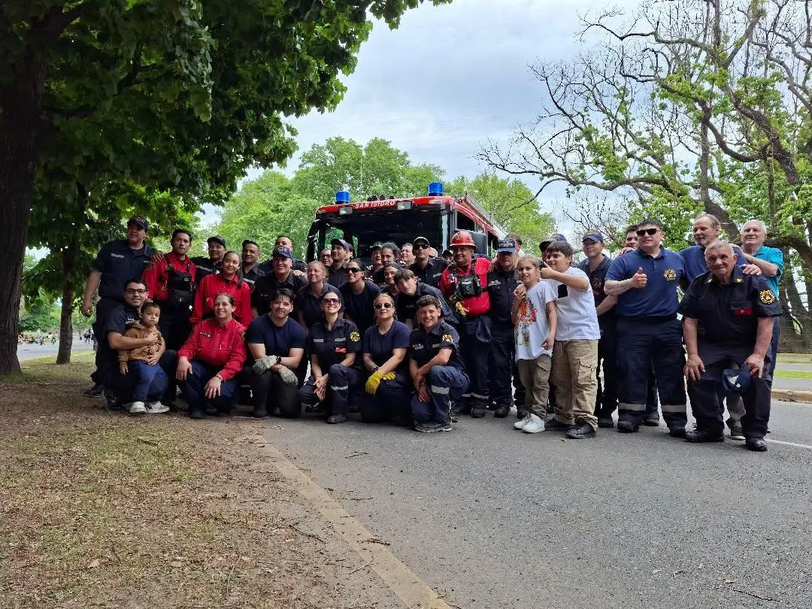

Jefe de Cuerpo
Comandante General

Vocación, formación y compromiso al servicio de nuestra comunidad.
El Cuerpo Activo reúne al personal de bomberos voluntarios que desarrolla las tareas operativas de la institución. Su labor comprende la atención de emergencias y la preparación permanente para responder a las necesidades de la comunidad.
Desde el Cuartel Central y los destacamentos de Boulogne y Béccar, sus integrantes participan en actividades de guardia, capacitación, entrenamiento y servicios.
Responsables de la conducción general del Cuerpo Activo.
Jefe de Cuerpo
Comandante General
2do Jefe de Cuerpo
Comandante Mayor
Comandante
Subcomandante
Subcomandante
Oficial Auxiliar de Dotación
El personal se organiza por jerarquías y responsabilidades dentro del servicio.
Conducción y coordinación operativa.
Supervisión y apoyo a la conducción.
Personal que participa en las tareas del servicio.
Cuartel Central · Destacamento N.º 1 · Destacamento N.º 2
El Cuerpo Activo presta servicio desde tres dependencias del partido de San Isidro.
La formación constituye una parte esencial de la actividad bomberil. El personal se prepara para trabajar de forma coordinada ante las distintas situaciones de emergencia.
Las especialidades permiten profundizar conocimientos y técnicas para intervenciones específicas.
